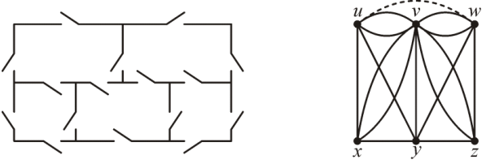

Вежба 25. Одредете дали графовите имаат Ојлеров циклус. Доколку постои,
конструирајте го. Ако не постои Ојлеров циклус, одредете дали графот има
Ојлеров пат, и доколку постои – конструирајте го.
Треба да се занае ова:
Решение
1. Неформално, пат е низа од јазли кој започнува во
некој јазол во графот и минува од јазол до јазол преку ребрата.
2. За неориентиран граф се вели дека е сврзан ако постои пат помеѓу секој пар на
различни јазли на графот.
3.Ојлеров циклус во графот `G` е едноставен циклус кој го содржи секој јазол на
графот. Ојлеров пат во графот `G` е едноставен пат кој го содржи секое ребро од
графот.
4. Сврзан мултиграф со најмалку два јазли има Ојлеров циклус ако и само ако
секој од јазлите има парен број на степен.
5.Сврзан мултиграф има Ојлеров пат но не и Ојлеров циклус ако и само ако има
точно два јазли со непарен степен.
а. Графот е сврзан. Нема Ојлеров циклус (секој од јазлите не е со парен степен).
Нема Ојлеров пат (Има повеќе од два јазли со непарен степен)
б. Графот е сврзан. Има Ојлеров циклус (секој од јазлите е со парен степен).
`a, b, e, f, c, b, d, e, h, f, i, h, g, d, a`
в. Графот е сврзан. Нема Ојлеров циклус (секој од јазлите не е со парен степен).
Има Ојлеров пат (Има точно два јазли со непарен степен `c, f`)
г. Графот е сврзан. Има Ојлеров циклус (секој од јазлите е со парен степен).
`a,b,e,a,e,d,c,d,b,c,e,a`
д. Графот е сврзан. Нема Ојлеров циклус (секој од јазлите не е со парен степен).
Има Ојлеров пат (Има точно два јазли со непарен степен `b, c`). `b, c, i, b,a,
h,
i, a, d, e, f, d, i, g, d, c`
ѓ. Графот е сврзан. Нема Ојлеров циклус (секој од јазлите не е со парен степен).
Има Ојлеров пат (Има точно два јазли со непарен степен `a, d`). `а, b, e, c, e,
b, d, e, a, c, d`
Вежба 26. За кои вредности на n комплетниот граф Kn има Ојлеров циклус?
Секое теме во комплетен граф со `n` темиња има степен `n-1`, па Ојлеров циклус
постои ако и само ако `n` е непарен.
Решение
Вежба 27.
Темињата на коцката може да ги разгледуваме како темиња на граф, а
рабовите како негови ребра. На овој начин добиваме граф со осум
темиња и дванаесет ребра, таков што степенот на сите негови темиња е
три. Следува дека не може да постои Ојлеров пат за овој граф, па не
може ниту инсектот да помине по сите рабови на коцката.
б) Инсектот би се движел по тело кое изгледа како на цртежот. Можеме
да забележиме дека телото има две темиња со степен 3 и три темиња со
степен 4. Значи ако и ова тело го разгледуваме како граф, тоа има две
темиња со непарен степен, што значи дека тука постои Ојлеров циклус
односно инсектот може да помине по сите рабови на телото точно
еднаш.Веројатно мисли дека постои Ојлеров пат.
а) Дали е можно еден инсект да помине по сите рабови на една
коцка
точно еднаш?;
Решение
Решение
Вежба 28. Примени ја верзијата 2 на алгоритмот за наоѓање на Ојлеров циклус
над најлевиот граф на цртежот подолу (`K_5` ).
Степенот на темињата на овој граф е 4. Избираме произволно теме, на
пример `s` . Бараме теме кое е поврзано со `s` , на пример `w` , а потоа теме
кое е поврзано со `w` , на пример `v` , и бидејќи `v` е поврзано со `s` го
одбираме циклусот `swvs`. Од графот ги исфрламе ребрата кои сме ги
искористиле и го добиваме вториот граф на цртежот. Одбираме теме од
графот кое има степен поголем од нула и го има во претходниот циклус,
на пример `s` . Бараме теме кое е поврзано со `s` во вториот граф, на
пример `u` . Бараме теме кое е поврзано со `u` , на пример `r` и бидејќи `r` е
поврзано со `s` го одбираме циклусот `surs`. Со комбинирање на двата
циклуси добиваме циклус `swvsurs`. Ги исфрламе ребрата од вториот
циклус и го добиваме третиот граф на цртежот. Одбираме теме кое е веќе
искористено во циклусот и има степен поголем од нула, на пример `w` .
Одбираме теме кое е поврзано со `w` во третиот граф, на пример `r` .
Одбираме теме кое е поврзано со r во третиот граф, единствено такво
теме е `v` , одбираме теме кое е поврзано со `v` во третиот граф, единствено
такво теме е `u` и бидејќи `u` е поврзано со `w` го одбираме циклусот
`wrvuw`. Ако го комбинираме овој циклус со `swvsurs` добиваме циклус
`swrvuwvsurs`, кој е Ојлеров циклус, бидејќи по исфрлање на ребрата од
циклусот `wrvuw` од третиот граф, секое теме има степен нула, т.е. сме ги
искористиле сите ребра во почетниот граф.
Решение
Вежба 29. Примени ја верзијата 2 на алгоритмот за наоѓање на Ојлеров циклус
на првиот граф од цртежот подолу, се’ додека не се јави проблем.
Одбираме произволно теме, на пример `u` . Одбираме теме кое е поврзано
со `u` , на пример `x` . Одбираме теме кое е поврзано со `x` , на пример `v` .
Одбираме теме кое е поврзано со `v` , на пример `y` . Бидејќи `y` е поврзано со
`u` го
одбираме циклусот `uxvyu` , а со исфрлање на него од првиот граф
се добива вториот граф. Одбираме произволно теме од претходниот
циклус, на пример `u` . Одбираме теме кое е поврзано со `u` , единствено
такво теме е `z` . Одбираме теме кое е поврзано со `z` , на пример `w` .
Одбираме теме кое е поврзано со `w` , единствено такво теме е `x` .
Одбираме теме кое е поврзано со `x` , во вториот граф не постои теме кое
е поврзано со `x` (различно од `w` ), па не може да избереме циклус со кој
би го продолжиле алгоритмот. Следува дека не постои Ојлеров циклус.
Постапката не може да се продолжи, бидејќи во вториот граф нема
циклуси. При избирањето на првиот циклус, наместо да се вратиме од `y`
во `u` можеме да продолжиме на `w` , па потоа во `x` , од каде не можеме да
продолжиме или во `z` , па во `u` . Со ова го добиваме циклусот `uxvywzu`, а
со негово исфрлање се добива третиот граф. Овој граф освен тоа што
нема циклуси не е ни сврзан. `uxvywzu` е најголемиот циклус до
изоморфизам кој може да се добие.
Решение
Вежба 30. На цртежот подолу е претставена куќа со пет соби и шеснаесет
врати
Оваа задача може да се сведе на графот десно, со тоа што надворешниот простор го
претставуваме со темето `v` , собата горе лево со `u` , собата десно горе со `w`
, собата лево долу со `x` , собата долу на средина со `y` и собата десно долу со
`z` . Со ова претставување, доволно е да провериме дали за овој граф постои
Ојлеров пат. Степените на темињата во овој граф се: `D(v)9`, `D(u)5`, `D(w)5`,
`D(x)4`, `D(y)5` и `D(z)4`, па бидејќи постојат четири темиња со непарен
степен, следува дека не постои Ојлеров пат;
Ако вратата меѓу собите кои се горе не се користи, тогаш од графот
треба да го исфрлиме реброто `(u,w)` (испрекинатото ребро), па степените
на темињата ќе бидат: `D(v)9`, `D(u)4`, `D(w)4`, `D)(x)4`, `D(y)5` и `D(z)4`, па
бидејќи постојат две темиња со непарен степен (`v` и `y`),
следува дека постои Ојлеров пат. На пример, еден Ојлеров пат ќе биде
`vuvwvxvzvyuxyzwy` (секој Ојлеров пат мора за крајни темиња да ги има `v` и `y`
, т.е. со обиколката мора да почнеме надвор и да завршиме во собата
долу на средина или обратно).

а) Дали постои начин да се помине низ сите врати по точно еднаш?;
Решение
Решение
Вежба 31. Која од следните фигури може да се нацрта без подигнување на
пенкалото и без поминување на една линија повеќе од еднаш?
може, има Ојлеров пат;
не може, нема Ојлеров пат;
може, само две темиња имаат непарен степен, па патот ќе почнува и ќе завршува со нив.
Решение
Решение
Решение
Вежба 32. Даден е граф чии темиња се означени со сите низи од нули и
единици (бит-стрингови) со должина `n`, и во кој што помеѓу кои било две темиња постои ребро:
Степенот на секое теме е `n` – ќе има Ојлеров пат и Ојлеров циклус само ако `n` е парен;
Едно теме не е поврзано со себе и со `n`-те темиња со кои се разликува
во точно една координата – следува поврзано е со вкупно `2n – n – 1`
темиња. Ова е степенот на сите темиња, па Ојлеров пат и Ојлеров циклус
ќе постои само ако `n` е непарен.
Кога во ваков граф постои Ојлеров пат/циклус?
а) само ако темињата се разликуваат во точно една координата;
Решение
Решение